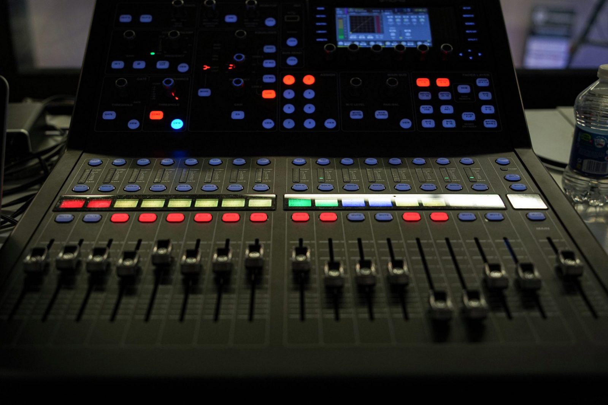

Dua studi kasus dari produksi film pendek di sekolah. Yang pertama soal suara: musik latar yang terlalu keras sampai dialog tidak terdengar. Yang kedua soal cerita: adegan yang melompat-lompat tanpa kontinuitas sampai penonton bingung. Keduanya punya perbaikan yang konkret — dan bisa dicoba langsung di halaman ini.

Dalam sebuah adegan, dialog tokoh nyaris tidak terdengar karena tertutup musik latar. Masalahnya bukan pada musiknya — melainkan pada keseimbangan suaranya.
Editor menambahkan musik latar dengan volume yang terlalu tinggi. Akibatnya musik bersaing dengan dialog di adegan yang sama, dan suara percakapan tokoh — elemen terpenting dalam adegan — justru tertutup.
Prinsipnya satu: dialog selalu diutamakan. Musik latar diatur jauh lebih kecil daripada dialog — patokan umumnya dialog berada di sekitar −12 s.d. −6 dB, sedangkan musik latar di sekitar −24 s.d. −18 dB. Angka ini fleksibel, menyesuaikan kebutuhan tiap proyek.
Selain volume, gunakan EQ: kurangi frekuensi musik pada rentang suara manusia, sekitar 1–4 kHz, supaya dialog punya ruang dan tidak bertabrakan dengan musik. Coba rasakan bedanya pada mixer sederhana di bawah ini.
Geser fader dialog dan musik, lalu perhatikan meter dan penilaiannya. Mulai dari preset untuk melihat masalah aslinya.
Suara manusia paling jelas terdengar di rentang 1–4 kHz. Jika musik dipangkas sedikit di rentang itu, dialog terdengar maju tanpa harus menaikkan volumenya.
EQ datar: musik mengisi semua frekuensi, termasuk tempat dialog seharusnya terdengar.
Audio mixing adalah proses menggabungkan dan menyeimbangkan semua elemen suara menjadi satu kesatuan yang enak didengar. Fungsinya:
Karena dialog adalah pembawa cerita. Musik latar bertugas mendukung suasana, bukan mengambil alih adegan.
Supaya alur dialog dalam adegan tetap terdengar jelas — tidak ada satu pun percakapan yang samar hanya karena musik latar yang terlalu besar.
Sebuah film pendek tentang dompet yang hilang terasa membingungkan: adegannya melompat dari ruang kelas ke kantin, lalu kembali lagi ke ruang kelas, tanpa penjelasan apa pun.
Masalah utamanya adalah alur cerita yang tidak runtut dan kurangnya kontinuitas antaradegan. Perpindahan lokasi dari ruang kelas ke kantin, kemudian kembali ke ruang kelas, tidak disertai penjelasan, sehingga penonton kesulitan memahami urutan peristiwa yang sebenarnya terjadi.
Storyboard menggambarkan setiap adegan secara berurutan sebelum proses pengambilan gambar dimulai. Dengan storyboard, kelompok dapat merencanakan lokasi, waktu, dan perpindahan adegan sejak awal — sehingga cerita tersusun jelas, terstruktur, dan mudah dipahami penonton. Kesalahan urutan ketahuan di atas kertas, bukan setelah film jadi.
Cerita dompet hilang ini sebenarnya sederhana — asalkan diceritakan berurutan, satu langkah mengikuti langkah sebelumnya. Bandingkan dua versi storyboard di bawah ini: nomor pada tiap frame adalah urutan kejadian yang benar.
Kontinuitas membuat alur film terasa logis, runtut, dan mudah dipahami. Ia menjaga hubungan antaradegan tetap nyambung, sehingga penonton tidak bingung dan bisa mengikuti cerita dari awal hingga akhir dengan nyaman.
Setiap adegan menjawab pertanyaan adegan sebelumnya: dompet hilang di kelas → dicari di kelas → dicari di kantin → ditanyakan → kembali dicari → ketemu. Putus satu mata rantai, penonton kehilangan ceritanya.
Kedua kasus ini terlihat berbeda — satu soal telinga, satu soal mata — tetapi akarnya sama. Film gagal bukan karena idenya jelek, melainkan karena penonton kehilangan pegangan: dialog yang tidak terdengar, atau urutan peristiwa yang tidak masuk akal.
Perbaikannya pun sama-sama terjadi sebelum penonton menonton: dialog diutamakan saat mixing, dan urutan adegan dikunci sejak storyboard. Sisanya adalah ketelitian.
Dialog adalah raja. Jaga dialog di −12 s.d. −6 dB, tekan musik ke −24 s.d. −18 dB, dan potong EQ musik di 1–4 kHz agar suara manusia punya ruang.
Urutan adalah logika. Rencanakan tiap adegan dan perpindahannya di storyboard, jaga kontinuitas, dan penonton akan mengikuti cerita tanpa perlu menebak.